| 日付 | 2024年11月23日（土） |
|---|---|
| 山域 | 西上州 |
| メンバー | 単独 |
| 山行形態 | 日帰り |
| アクセス | 車 |
| ルート (Map) | 高岩八風平登山口 (10:05) - (10:22) 高岩登山口 - (10:49) コル - (11:13) 高岩雄岳 (11:24) - (12:08) 高岩雌岳P3 - (12:56) 高岩八風平登山口 |
高岩は西上州に聳える岩峰だ。
長い間、この山に登る機会を伺っていたが、なかなか登る機会がなかった。
晴れの休日にこの山に行く機会を得る。
ここ最近、岩場が怖いので、ちょっと不安を抱えながら現地に向かう。
高岩八風平登山口にある待避所近くに車を停める。標高840m。
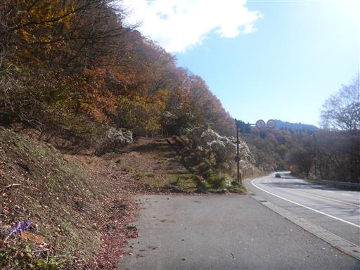
モミジの紅葉がきれいだ。
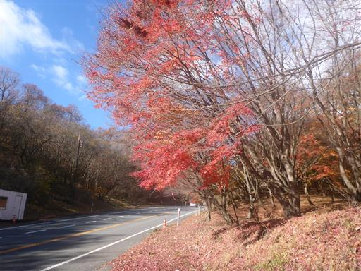
車通りの多い車道を歩いていく。
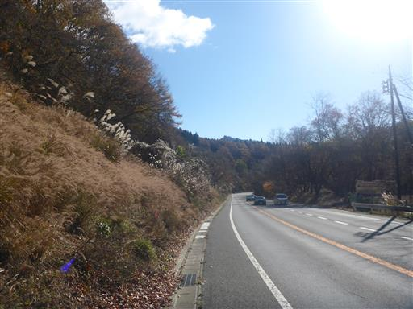
振り返ると高岩が大きい。見事な岩峰だ。
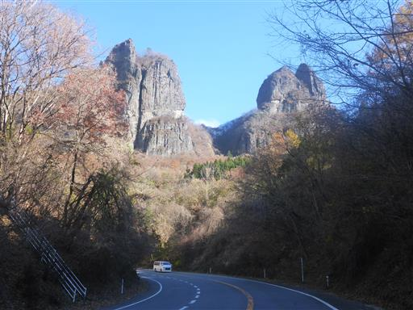
周囲はススキが多い。秋の景色だ。
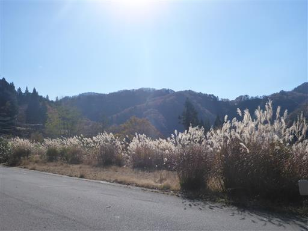
登山口にはちゃんと標識がある。
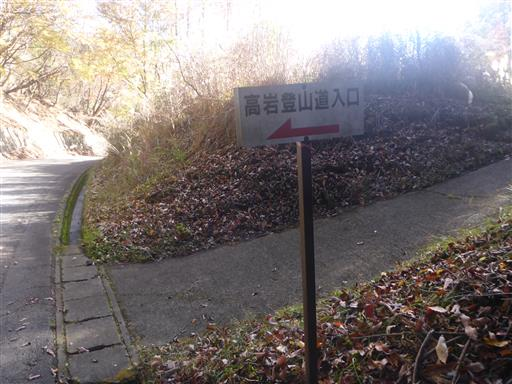
ここから登山道に入っていく。
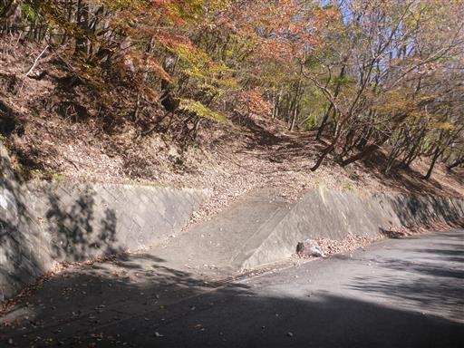
やたら倒木が多い。
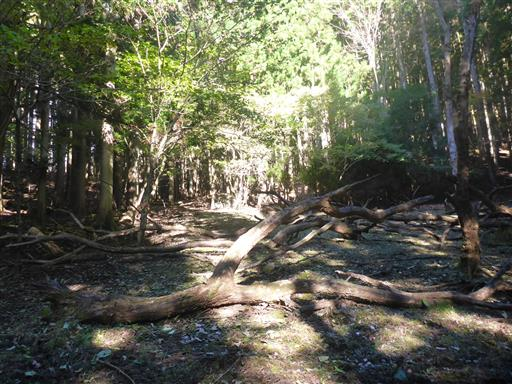
ボロボロになっている標識だが辛うじて読み取れる。
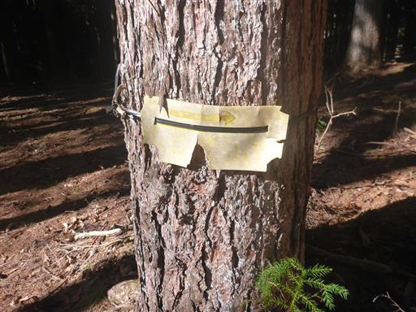
岩の庇の下に何かが祀られている。御嶽大権現と書かれている。
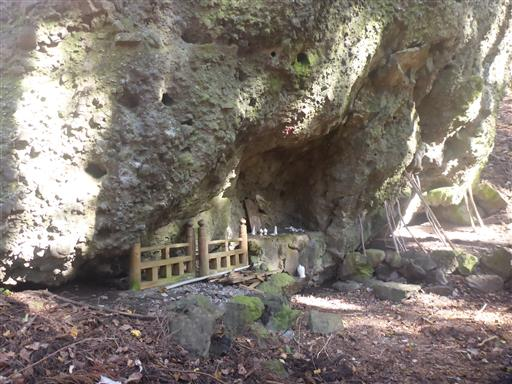
落ち葉が積もる斜面を登っていく。

その後、岩が散在する沢道になる。黄色のペンキマークを拾って登っていく。
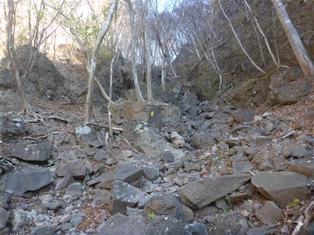
あっという間に雄岳と雌岳のコルに到着する。
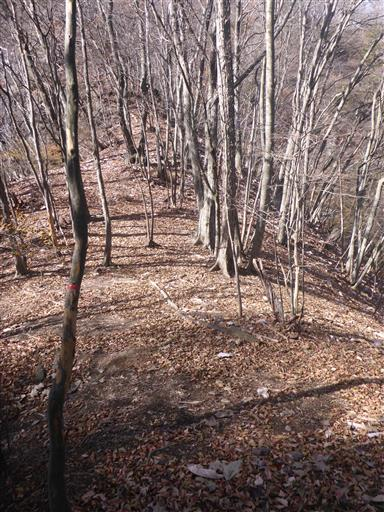
ここからまずは雄岳を目指す。目の前には岩峰が聳え立っている。
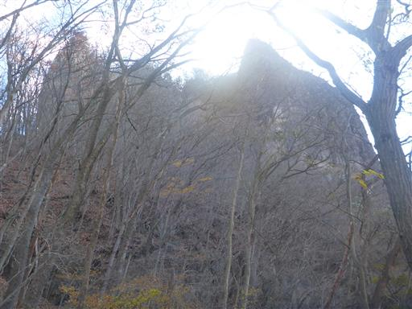
岩棚を歩く。
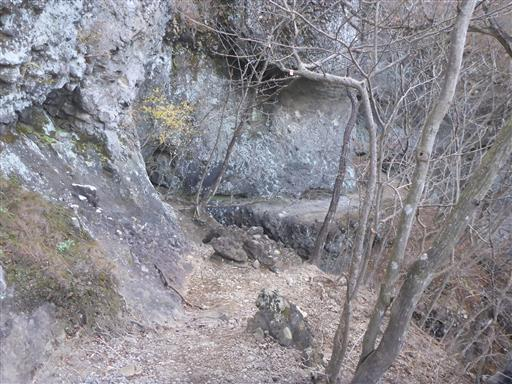
一箇所、岩棚が削れている場所があり、一段下に降ってよじ登る。
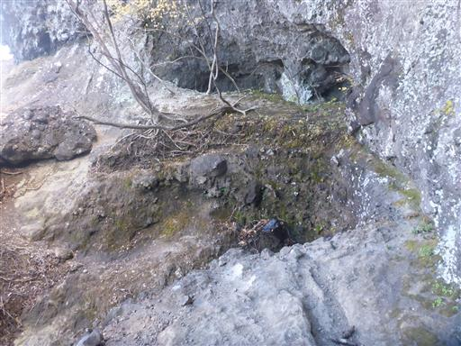
上から水滴が落ちてくる。水滴を受け続けた石は表面が光っている。
触ってみると見た目通りツルツルだ。
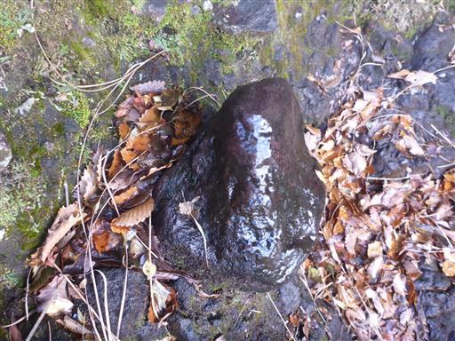
30mチムニーの鎖場に到着。
ロープで確保をしている先行者がいたため、5分ほど待たされる。
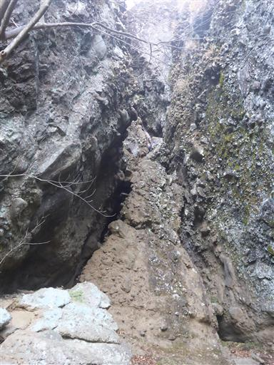
狭く、そして長い。ホールドはたくさんあるが、垂直に近い岩場で腕力を要する。
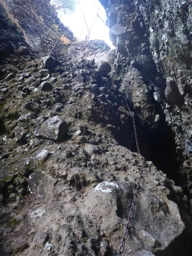
岩場を越えたら山頂はすぐ。
道を間違えて隣にある摩利支天と書かれた石碑のあるピークに行ってしまう。
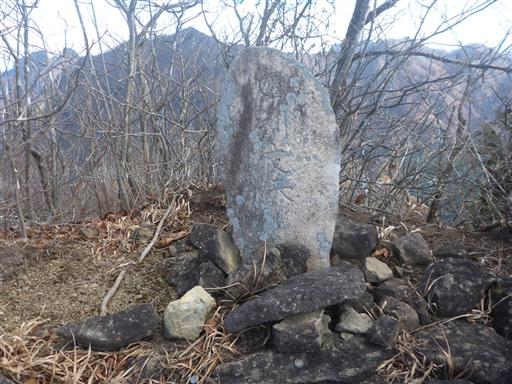
改めて隣のピークに移動。高岩雄岳到着。標高1067m。
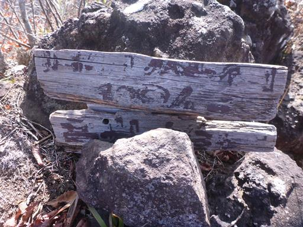
すぐ近くには雌岳の岩壁が見える。
一番奥には浅間山が見えているが残念ながら山頂部は雲に隠されている。
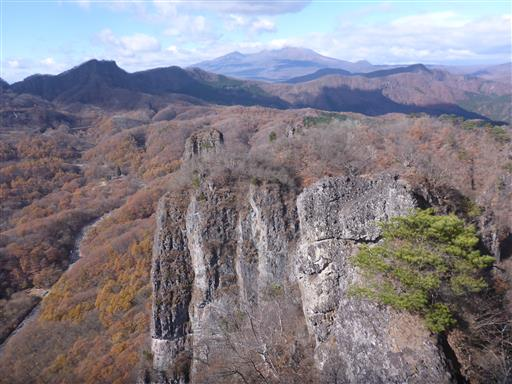
眼下には高速道路が見えている。いつも高速道路からこの岩峰を眺めていた。
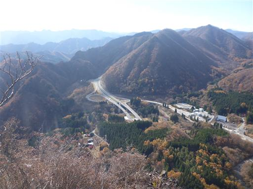
遠くには榛名山。右手に見えているのは裏妙義の辺り。

下山。ポイントはやはり鎖場。
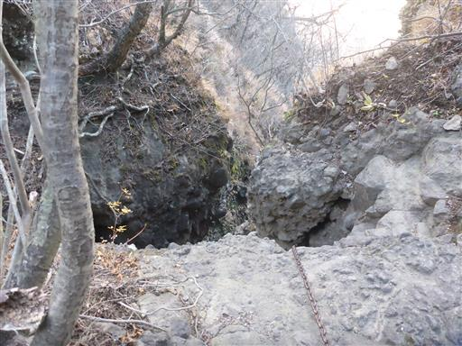
狭い。腕力を使わない分、登りよりは少し楽だ。
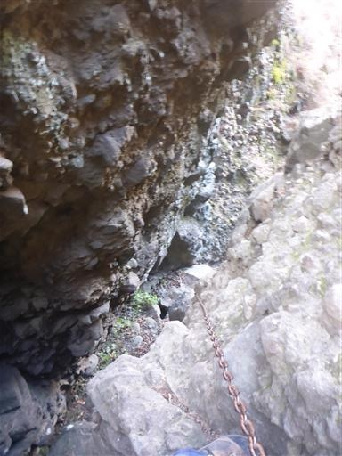
草が堆積して滑りそうな道を慎重に歩く。
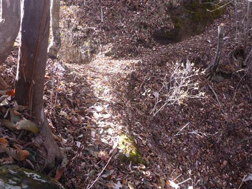
土で滑りやすい急斜面。
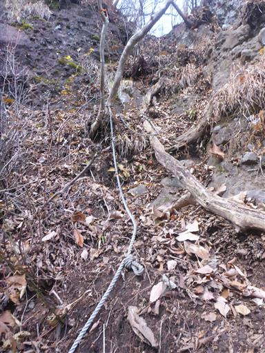
雄岳の基部に大きな穴が開いている。なかなか見ないサイズの穴だ。
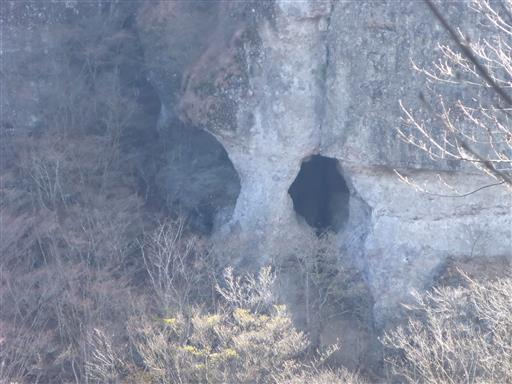
雌岳P1に到着。
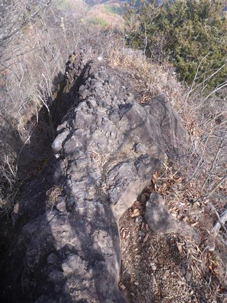
ここからは雄岳の雄姿が良く見える。よくこんな岩峰に登山道をつけたものだ。
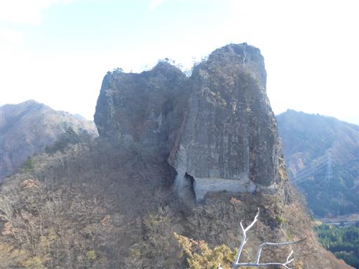
続いて雌岳P2。ここは鎖も何もない岩場で危険なためスキップ。
雄岳で苦戦しているようでは登らない方が無難だろう。
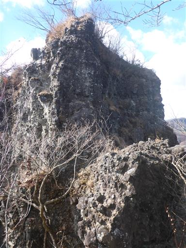
続いて雌岳P3に到着。岩に小さな穴が開いている。
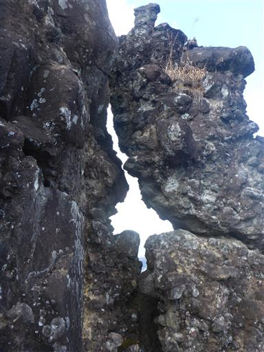
岩の向こうに浅間山が見える。
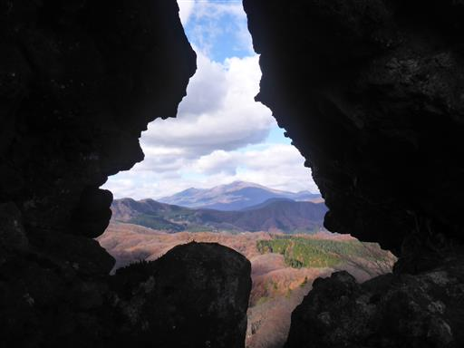
P3によじ登る。鎖は無いが登るのは容易だ。
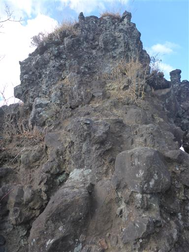
ここからも雄岳が良く見える。
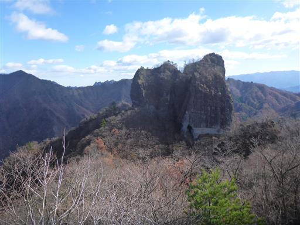
先ほど登るのをスキップしたP2。ここより少し標高が高そうだ。
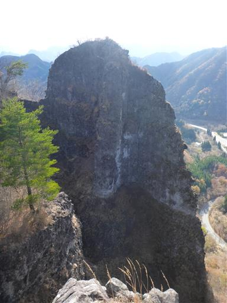
西側の展望。目の前の山を越えたら、その先は軽井沢だ。
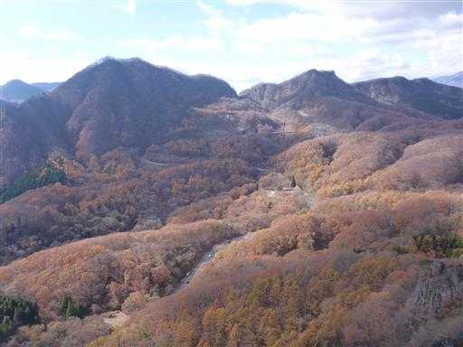
ここから先はもうピークはない。下山道に入っていく。
倒木をしゃがんで潜る。
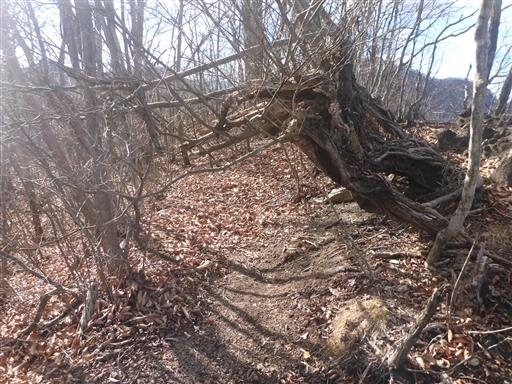
少し登山道から外れて展望台に行ってみる。
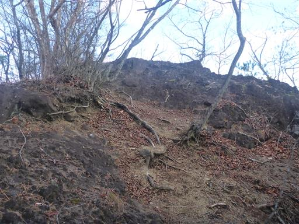
裏妙義の岩峰。見える景色は雌岳とさほど変わらない。
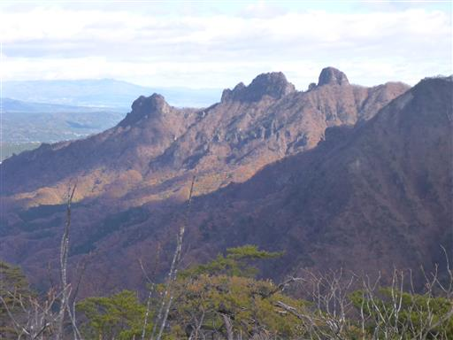
展望を楽しんだら先に進む。ここで再び岩場。
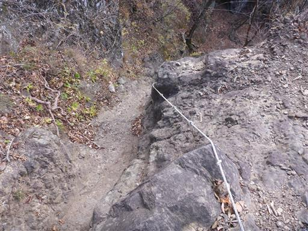
ここも結構長い。傾斜は緩いが岩がもろく、あまりホールドが信用できない。
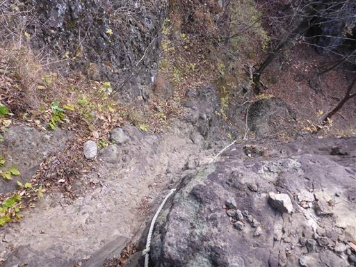
降り終えた場所から岩場を見上げる。
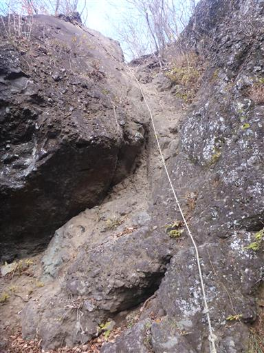
ここから先は落ち葉が堆積していて道が分かりにくく、また滑りやすい。
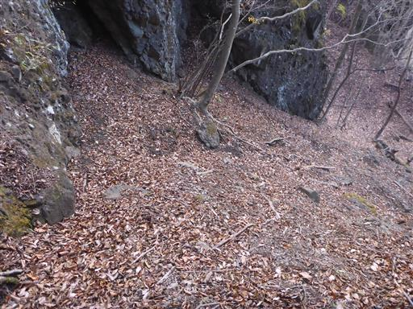
最後は落ち葉に埋もれている林道をたどって下山。
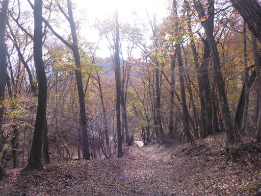
無事、登山開始時に撮影したモミジの場所まで戻ってくる。
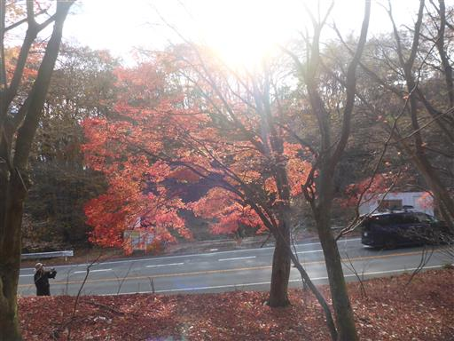
改めて高岩を眺める。
歳のせいか、雄岳のチムニー鎖場は結構怖かった。
それでも登り降りとも落ち着いて通過でき、爽快な展望も得られてよかった。
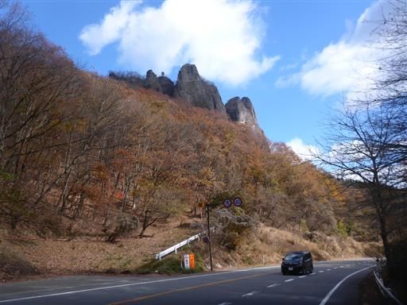